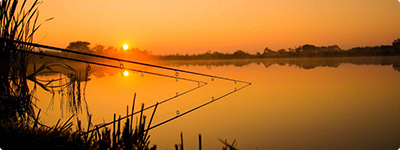
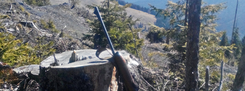

Noutati
AJVPS Botoșani supune dezbaterii CCM
01.12.2016
Eventualele sugestii sau propuneri de completare / modificare se vor transmite în maxim 30 de zile la sediul asociației!
În atenţia candidaţilor pentru examenul de vânător 2016!!
07.08.2016
Lista candidaţilor promovaţi la examenul de vânător din 06.08.2016 și un anunţ din partea conducerii pentru candidaţii promovaţi.
În atenţia candidaţilor pentru examenul de vânător 2016!!
10.07.2016
Data limită de completare a dosarelor și achitare a taxei de examinare este de 15.07.2016.
Dosarele trebuie să conţină următoarele:
- 1. Act de identitate
- 2. Cerere
- 3. Cazier de la data inscrierii
- 4. Comunicare repartizare
- 5. Recomandare de absovire
- 6. Fisă de stagiatură
- 7. Fisă medicală
- 8. Cazier judiciar
- 9. Declaraţie notarială
- 10. Aviz pshihologic
- 11. Certificat de instruire arme si muniţii
- 12. Adeverinţă poligon
- 13. Recomandare vânător
Persoanele care nu au completat dosarele pană la data de 15.07.2016 nu vor putea intra în examen!!
Taxa de examinare este în cuantum de 300 lei.
Examenul se va desfăşura în data de 06.08.2016 ora 9:00 la Casa Armatei Botoşani (vis a vis de Hotel Rapsodia). Întrebările / răspunsurile valabile pentru examenul de vânător se găsesc pe situl asociaţiei în secţiunea "Vrei sa devii vânător?"
Rezultate concurs de pescuit "Cupa primăverii"
13.05.2016
În urma concursului de pescuit “Cupa Primăverii” Ed.1 2016 care s-a desfașurat pe lacul Brehuiești au urcat pe podium următorii concurenţi:
-
Locul I: Mihai Lucian
-
Locul II: Văcăriu Dănuţ
-
Locul III: Rotariu Cristi
Cea mai mare captură a concursului a fost prinsă de către Mihai Lucian, ocupantul locului I, având greutatea de 5,8 kg.
Felicitări concurenţilor pentru fair play!!
Concurs de pescuit "Cupa primăverii"
06.04.2016
A.J.V.P.S. Botoșani anunţă organizarea concursului de pescuit "Cupa primăverii", ediţia I, la lacul Brehuiești, pe adta de 07.05.2016, ora 06:00. Acesta este un concurs individual, dedicat pescarilor sportivi, indiferent de vârstă.
Pentru relaţii privind regulamentul și înscrierile, vă așteptăm al sediul A.J.V.P.S. Botoșani din Pietonalul Transilvaniei, nr.4, parte, până la data de 30.04.2016.
Cotizaţie membrii vânători și pescari 2016
27.02.2016
Consiliul A.J.V.P.S. Botoșani a stabilit nivelul cotizaţiei pe anul 2016:
-
Membri vânători
- - 1100 lei: până la 31.10.2016
- - 1200 lei : între 01.11 - 31.12.2016
Membri vânători care nu și-au achitat cotizaţia până la data de 31 octombrie vor fi suspendaţi, neavând dreptul să participe la deschiderea sezonului de vânătoare la iepuri.
-
Membri pescari
- - 70 lei integral + 39 lei permis A.N.P.A.
- - până la 14 ani: 20 lei + 10 lei permis A.N.P.A.
- - între 14 - 18 ani: 35 lei + 10 lei permis A.N.P.A.
- - elevi și studenți: 35 lei + 10 lei permis A.N.P.A.
- - peste 65 ani: 35 lei (permis A.N.P.A.)
- - peste 80 ani: 20 lei (permis A.N.P.A.)
- - peste 75 ani: 20 lei (permis A.N.P.A.)
Concurs pescuit sportiv Cupa AJVPS
13.08.2015
Concursul de pescuit sportiv Cupa AJVPS, ediţia 1, va avea loc duminică 30.08.2015 pe lacul Vlădeni. Înscrierile se fac la sediul AJVPS Botoșani, Pietonalul Transilvaniei nr. 4. Pentru mai multe informaţii, citiţi documentele de mai jos sau suna-ţi la numerele de telefon 0730 991 229 sau 0744 555 257.
Tarife vânătoare 2015
19.05.2015
Urmare ședinţei Consiliului AJVPS Botoșani, s-au stabilit următoarele tarife și metode de vânătoare pentru sezonul 2015/2016.
Cotizaţie membrii vânători și pescari 2015
25.04.2015
Consiliul A.J.V.P.S. Botoșani a stabilit nivelul cotizaţiei pe anul 2015:
-
Membri vânători
- - 1100 lei: până la 31.10.2015
- - 1200 lei : între 01.11 - 31.12.2015
Membri vânători care nu și-au achitat cotizaţia până la data de 31 octombrie vor fi suspendaţi, neavând dreptul să participe la deschiderea sezonului de vânătoare la iepuri.
-
Membri pescari
- - 70 lei integral + 39 lei permis A.N.P.A.
- - până la 14 ani: 20 lei + 10 lei permis A.N.P.A.
- - între 14 - 18 ani: 35 lei + 10 lei permis A.N.P.A.
- - elevi și studenți: 35 lei + 10 lei permis A.N.P.A.
- - peste 65 ani: 35 lei (permis A.N.P.A.)
- - peste 80 ani: 20 lei (permis A.N.P.A.)
- - peste 75 ani: 20 lei (permis A.N.P.A.)
Prohibiţie pescuit 2015
25.04.2015
S-a stabilit perioada de prohibiţie în perioada de 60 de zile, 11 aprilie – 09 iunie , pentru apele naturale, iar în apele care constituie frontieră de stat, inclusiv Golful Musura, pe o durată de 45 de zile, în perioada 11 aprilie - 25 mai inclusiv.
Tarife vânat mare 2014/2015
12.05.2014
În atenţia membrilor vânători. Au fost stabilite tarifele pentru vânat mare pentru sezonul de vânătoare 2014/2015.
Cotizatie membrii vanatori 2014
25.03.2014
Nivelul cotizaţiei pentru membrii vânători pe anul 2013 este de:
- - 1100 lei: până la 31.10.2013
- - 1200 lei : între 01.11 - 31.12.2013
Prohibitie pescuit 2014
25.03.2014
S-a stabilit perioada de prohibitie in perioada de 60 de zile, 1 aprilie - 30 iunie, pentru apele naturale, iar pentru raul Prut pe o perioada de 90 de zile, intre data de 1 aprilie si 29 iulie.
Actiunea de evaluare a vânatului 2014
21.02.2014
In conformitate cu legislatia in vigoare si cu respectarea normelor tehnice, in perioada 22.03.2013 - 04.03.2014 se va desfasura actiunea de evaluare a vanatului pe toate fondurile cinegetice gestionate de asociatia noastra.
Graficul privind actiunea de evaluare il puteti consulta in tabelul din fisierul de mai jos.
Locurile de intalnire pentru actiunea de evaluare le veti solicita organizatorilor de grupa cat si paznicilor de vanatoare.
Prezenta membrilor vanatori din grupa este obligatorie!
Locuri de întâlnire vânătoare iepuri 2013/2014
05.11.2013
În atenţia membrilor vânători. A fost stabilită lista locurilor de întâlnire de vânătoare iepuri pentru sezonul de vanatoare 2013/2014.
Tarife vânat mare pe sezonul 2013/2014
22.01.2013
În atenţia membrilor vânători. Au fost stabilite tarifele pentru vanat mare pentru sezonul de vanatoare 2013/2014.
Ordin de stabilire a perioadelor si zonelor de prohibitie a pescuitului pentru 2013
22.01.2013
În atenţia membrilor pescari. Ministerul Mediului si Schimbarilor Climatice a emis ordinul nr. 400/2013 prin care se stabilesc perioadele si zonele de prohibitie a pescuitului pentru 2013, precum si a zonelor de protectie a resurselor acvatice vii in anul 2013 a fost publicat in Monitorul Oficial, Partea I, nr. 145.
Evaluarea de primavara a efectivelor de vanat
22.01.2013
In atentia membrilor vanatori. A fost stabilit calendarul evaluarii de primavara a efectivelor de vanat de pe raza fondurilor de vanatoare arondate AJVPS Botosani.
Datele efectuarii acestor evaluari si alte informatii pertinente pentru acest proces le gasiti in fisierul accesibil prin butonul de mai jos.
Cotizaţie membrii vânători şi pescari anul 2013
22.01.2013
Nivelul cotizaţiei pentru membrii vânători pe anul 2013 este de:
- - 1000 lei: până la 31.03.2013
- - 1100 lei : între 01.04 - 31.10.2013
- - 1200 lei : între 01.11 - 31.12.2013
Nivelul cotizaţiei membrii pescari 2013.
- - Cotizaţia întreagă: 70 lei
- - Cotizaţie 1/2 conform statutului (pensionari, studenţi, persoane cu handicap, s.a.) : 35 lei
Cotizaţia nu include permisul A.N.P.A.
Repopularea fondului cinegetic cu fazani
20.12.2012
În cursul anului 2012, AJVPS Botosani a întreprins acţiuni de repopulare a fondului cinegetic din fondurile de vanatoare pe care le administreaza. Ca parte a acestei actiuni, membrii asociatiei au efectuat repopulari cu fazani a fondului cinegetic pe raza fondurilor de vanatoare Vaculesti, Sendriceni si Corni.
Tarife vanat mare 2012-2013
28.11.2012
- Mistreţ : 810 lei
- Căprior trofeu : 810 lei
- Căprior selecţie: 710 lei
- Căprior femelă: 500 lei
- Viezure: 150 lei
- Bizam : 20 lei / bucată, minim 5 bucăţi
Notă: 10 lei din c.v. cotizaţiei suplimentare reprezintă certificatul de deţinător al trofeului ce va fi eliberat odată cu autorizaţia. Prioritate la eliberarea autorizaţiilor pentru vânat mare o vor avea membrii din grupă cu cotizaţia achitată la zi. După această dată autorizaţiile se vor distribui solicitanţilor și din alte grupe cu respectarea celor mai sus menţionate. Cererile se vor depune la sediul A.J.V.P.S. Botoșani.
Pentru nemembrii din cadrul asociaţiei tarifele de la punctele mai sus menţionate se va face cu 50% mai mult ca membrii asociaţiei în limita cotelor disponibile.